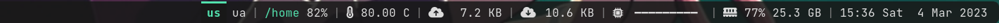
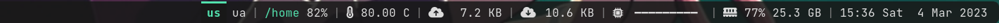

Oatbar - desktop bar for X11 and Wayland


Supported platforms: Native X11 and Wayland. First-class support for sway and hyprland.
 


The motivation for creation of oatbar was to extend on the idea of Unix-way for toolbars.
Inspired by i3bar which consumes a JSON stream that controls it’s appearance, we take this
idea much further without becoming a DIY widget toolkit.
JSON or plain text streams can be turned into text panels, progress bars or even images without any significant coding effort. It also ships with first-class support for LLMs (Large Language Models) to process your data.
Example
[[bar]]
height=32
blocks_left=["workspace"]
blocks_right=["clock"]
[[command]]
name="clock"
command="date '+%a %b %e %H:%M:%S'"
interval=1
[[command]]
name="desktop"
command="oatbar-desktop"
[[block]]
name = 'workspace'
type = 'enum'
active = '${desktop:workspace.active}'
variants = '${desktop:workspace.variants}'
on_mouse_left = "oatbar-desktop $BLOCK_INDEX"
[[block]]
name = 'clock'
type = 'text'
value = '${clock:value}'
Here clock command sends plain text, but desktop streams
structured data in JSON. Each is connected to text and enum selector
widgets respectively. oatbar-desktop ships with oatbar, but it is an external tool
to a bar, as can be replaced your own script.
Feel free to run oatbar-desktop and investigate it’s output. oatbar consumes
multiple text formats and this data can be
displayed with minimal configuration on widgets called blocks.
Ideas
I truly aspire to build something unique with oatbar, something what other status bars lack. Do you have a cool or unconventional feature you’d like to see in oatbar?
Join the disussion and brainstorm!
Next Steps
-
Partial; e.g. no
polybarformatting, but many scripts work. ↩
Installation
Installation
Please install cargo via the package manager or rustup.rs.
Supported Platforms
oatbar supports both X11 and Wayland compositors, including:
- Wayland: sway, hyprland
- X11: i3, bspwm, and other X11 window managers
Note
Wayland support uses a pure-Rust implementation and does not require any additional system libraries. The
libxcb/x11-xcbdependency is only required for X11 support.
Dependencies
ArchLinux
# For both X11 and Wayland (default)
pacman -Sy pango cairo libxcb pkgconf
# For Wayland only (build with --no-default-features -F wayland)
pacman -Sy pango cairo pkgconf
Ubuntu/Debian
# For both X11 and Wayland (default)
apt-get install -y build-essential pkg-config \
libcairo2-dev libpango1.0-dev libx11-xcb-dev
# For Wayland only (build with --no-default-features -F wayland)
apt-get install -y build-essential pkg-config \
libcairo2-dev libpango1.0-dev
Other
Install the development packages for the following libraries:
- Cairo
- Pango
- x11-xcb (only required for X11 support)
Install
cargo install oatbar
During the first launch the bar will create a default config at
~/.config/oatbar.toml that should work on most machines. Run:
oatbar
And you should see:

NetBSD
On NetBSD, a package is available from the official repositories. To install it, simply run:
pkgin install oatbar
Next
Overview
The configuration for the oatbar is located at ~/.config/oatbar.toml. If you do
not have this file, it would be generated with reasonable defaults.
Proceed to concepts to learn basic building blocks
of oatbar configuration.
Proceed to cookbook if you are familiar with concepts and you are looking for a recipe to solve a particular problem, proceed to the particular problem.
The configuration is unstable.
Until 1.0 release, the configuration change is unstable and can change between minor releases. Community feedback is needed to make sure that when configuration stabilizes, it is the best possible.
Concepts
oatbar configuration is built around four main concepts that work together to display information.
- Bar (
[[bar]]): The top-level window and layout container. - Block (
[[block]]): Visual widgets (text, images, graphs) displayed on the bar. - Command (
[[command]]): External programs that fetch data. - Variable (
[[var]]): Named data holders populated by commands and used by blocks.
Data Flow
- Command runs (e.g.,
date) and outputs text. oatbarparses the output and updates a Variable (e.g.,${clock:value}).- Block references the variable in its
valueproperty (e.g.,value="Time: ${clock:value}"). - Bar re-renders the block with the new text.
Variable Interpolation
String properties in blocks support variable interpolation using the ${...} syntax.
Syntax
- Basic:
${command_name:variable_name} - With Property:
${command_name:variable_name.property}(for complex data like i3bar JSON). - Filters:
${variable|filter:arg}(e.g.,${cpu|align:>3}).
Example
[[command]]
name="clock"
command="date +%H:%M"
interval=60
[[block]]
name="my_clock"
type="text"
value="Time: ${clock:value}"
Debugging
Use oatctl to inspect the current state of variables and blocks.
# List all active variables and their values
oatctl var ls
Bar
Bar is a single panel that is positioned at the top or the bottom of a screen.
Here are all the properties it can have:
| Property | Type | Default | Description |
|---|---|---|---|
height | int | 32 | Height of the bar in pixels. |
position | string | bottom | Position on screen: top, bottom or center. |
monitor | string | primary | Monitor name (from xrandr) to display the bar on. |
blocks_left | list | [] | List of block names to align to the left. |
blocks_center | list | [] | List of block names to align to the center. |
blocks_right | list | [] | List of block names to align to the right. |
margin | int/object | 0 | Margin around the bar. Can be a single number or {top=0, bottom=0, left=0, right=0}. |
background | color | transparent | Background color of the entire bar. |
popup | bool | false | If true, the bar is hidden until triggered by a block (see Block) or mouse at edge. |
popup_at_edge | bool | false | If true, showing the mouse at the screen edge triggers the popup. |
show_if_matches | list | [] | List of [expression, regex] pairs. Bar is visible only if all regexes match. |
Example
[[bar]]
height=32
position="top"
monitor="eDP-1"
background="#1e1e2e"
margin={left=10, right=10, top=5, bottom=0}
blocks_left=["workspace"]
blocks_center=["window_title"]
blocks_right=["clock", "sys_info"]
popup=false
popup_at_edge=true
show_if_matches=[["${desktop:workspace.active}", "1"]]
Command
Command is an external program that provides data to oatbar.
| Property | Type | Default | Description |
|---|---|---|---|
name | string | Required | Unique identifier for the command. Used in variable namespaces (e.g., ${name:value}). |
command | string | Required | Shell command to execute (run via sh -c). |
interval | int | 10 | Execution interval in seconds. |
once | bool | false | If true, run only once at startup. |
format | string | auto | Output format: plain, i3bar or auto. |
line_names | list | [] | Names for variables when command outputs multiple lines (e.g., ["first", "second"] maps to ${name:first}, ${name:second}). |
Example
# Runs periodically
[[command]]
name="disk_free"
command="df -h / | tail -1 | awk '{print $5}'"
interval=60
format="plain"
# Runs once
[[command]]
name="uname"
command="uname -a"
once=true
# Streams continuously (e.g., oatbar-desktop)
[[command]]
name="desktop"
command="oatbar-desktop"
format="i3bar"
# Multi-line output
[[command]]
name="user_info"
command="echo $USER; echo $HOST"
line_names=["user", "host"]
oatbar will run each command as sh -c "command" to support basic shell
substitutions.
Formats
Formats are usually auto-detected and there is no need to set format explicitly.
plain
Plain text format is just text printed to stdout.
name="hello"
command="echo Hello world"
This will set ${hello:value} variable to be used
by blocks. If the command outputs multiple lines, each print
will set this variable to a new value. If the command runs indefinitely, the
pauses between prints can be used to only update the variable when necessary.
When the command is complete, it will be restarted after interval
seconds (the default is 10).
If line_names are set, then the output is expected in groups of
multiple lines, each will set it’s own variable, like ${hello:first_name} and
${hello:last_name} in the following example:
name="hello"
line_names=["first_name", "last_name"]
Many polybar scripts can be
used via the plain format, as soon as they don’t use polybar specific
formatting.
i3blocks raw format plugins
can be consumed too by means of the line_names set to standard names for
i3blocks.
i3bar
i3bar format is the richest supported format.
It supports multiple streams of data across multiple “instances” of these streams.
In i3wm this format fully controls the display of i3bar, where
for oatbar it is a yet another data source that needs to be explicitly
connected to properties of the blocks. For example instead of coloring
the block, you can choose to color the entire bar. Or you can use color red coming
from an i3bar plugin as a signal to show a hidden block.
Plugins that oatbar ships with use this format.
[[command]]
name="desktop"
command="oatbar-desktop"
The command output-desktop outputs:
{"version":1}
[
[{"full_text":"workspace: 1","name":"workspace","active":0,"value":"1","variants":"1,2,3"},
{"full_text":"window: Alacritty","name":"window_title","value":"Alacritty"}],
...
This command is named desktop in the config.
Each entry is groups variables under a different name that
represents a purpose of the data stream, in this case: workspace
and window_title. Multiple entries with the same name, but different
instance field to represent further breakdown (e.g. names of
network interfaces from a network plugin).
The output from above will set
the following variables, run oatbar and see them in real-time
$ oatctl var ls
desktop:workspace.active=0
desktop:workspace.value=1
desktop:workspace.variants=1,2,3
desktop:workspace.full_text=workspace: 1
desktop:window_title.value=Alacritty
desktop:window_title.full_text=window: Alacritty
If instance is present in the entry, then the name of the variable is
command_name:name.instance.variable.
Block
Blocks are the widgets displaying pieces of information on the bar.
oatbar provides a lot of hidden power via these widgets, as they can provide
more than they initially seem. Consider that the most of the string properties
of blocks support variable substitution, directly controlled by your scripts.
The reference below explains properties of these blocks and the Cookbook shows how to use them in a very clever way.
- Example
- Configuration Inheritance
- Text block
- Number block
- Enum block
- Image block
- Popups and Visibility
All blocks share the following properties.
| Property | Type | Default | Description |
|---|---|---|---|
name | string | Required | Unique identifier for the block. |
type | string | text | Block type: text, number, enum, image. |
value | string | "" | The content to display. Supports variables (e.g., ${cmd:var}). |
show_if_matches | list | [] | List of [expression, regex] pairs. Block is visible only if all regexes match. |
replace | list | [] | List of [regex, replacement] pairs applied to value. |
replace_first_match | bool | true | If false, applies all replacements; if true, stops after first match. |
output_format | string | None | Final formatting string (e.g., CPU: ${value}). |
pango_markup | bool | true | Enable Pango Markup parsing. |
font | string | inherit | Font definition (e.g., Monospace 12). |
background | color | transparent | Background color (Hex #RRGGBB or #RRGGBBAA). |
foreground | color | inherit | Text color. |
line_width | float | 1.1 | Width of border lines. |
overline_color | color | None | Color of the top border line. |
underline_color | color | None | Color of the bottom border line. |
edgeline_color | color | None | Color of the side border lines (left/right). |
hover_background | color | None | Background color on hover. |
hover_foreground | color | None | Text color on hover. |
hover_line_width | float | None | Width of border lines on hover. |
hover_overline_color | color | None | Color of the top border line on hover. |
hover_underline_color | color | None | Color of the bottom border line on hover. |
hover_edgeline_color | color | None | Color of the side border lines (left/right) on hover. |
margin | float | 0.0 | Space outside the block. |
padding | float | 8.0 | Space inside the block (around text). |
separator_type | string | None | Separator style: left, right, gap. |
separator_radius | float | 0.0 | Radius for rounded separators. |
popup | string | None | Popup behavior: block, partial_bar, bar. |
popup_value | string | None | Variable that triggers the popup on change. |
on_mouse_left | string | None | Command to run on left click. |
on_mouse_middle | string | None | Command to run on middle click. |
on_mouse_right | string | None | Command to run on right click. |
on_scroll_up | string | None | Command to run on scroll up. |
on_scroll_down | string | None | Command to run on scroll down. |
Example
[[block]]
name="clock"
type="text"
value="<span weight='bold'>${clock:value}</span>"
background="#1e1e2e"
foreground="#cdd6f4"
padding=8
margin=4
line_width=2.0
underline_color="#fab387"
on_mouse_left="calendar"
show_if_matches=[["${clock:value}", ".+"]]
Configuration Inheritance
To avoid repetition, you can use default_block to define common properties. oatbar uses a cascading configuration system:
- Global Default: A
[[default_block]]without anameapplies to all blocks. - Named Default: A
[[default_block]]with anameinherits from the Global Default. - Block: A
[[block]]inherits from a Named Default (ifinheritis set) or directly from the Global Default.
Global Default Example
This sets a default background for every block in the bar.
[[default_block]]
background="#202020"
padding=5
Named Default Example
You can define specific styles (e.g., “active” vs “inactive”) and apply them to specific blocks.
[[default_block]]
name="active_style"
background="#fab387"
foreground="#1e1e2e"
[[block]]
name="my_block"
inherit="active_style"
value="I am active!"
In this case, my_block will have:
padding=5(from Global Default)background="#fab387"(from Named Default “active_style”, overriding Global)foreground="#1e1e2e"(from Named Default “active_style”)value="I am active!"(from Block)
Text block
[[block]]
type="text"
Text blocks include all common properties, which should be enough to show basic text or icons using Pango markup, icon fonts such as Font Awesome, Nerd Fonts, IcoMoon or emojis.
In addition, text blocks are used as separators to create partial bars. They are smaller bars within a bar that groups multiple blocks together.

[[bar]]
blocks_right=["L", "music", "R", "E", "L", "layout", "S", "clock", "R"]
[[block]]
name="music"
...
show_if_matches = [['${player:now_playing.full_text}', '.+']]
popup = "partial_bar"
[[block]]
name="S"
type = "text"
separator_type = "gap"
value = "|"
[[block]]
name="E"
type = "text"
separator_type = "gap"
value = " "
background = "#00000000"
[[block]]
name="L"
type = "text"
separator_type = "left"
separator_radius = 8.0
[[block]]
name="R"
type = "text"
separator_type = "right"
separator_radius = 8.0
separator_type gives a hint on where partial bars are located.
This helps when popup="partial_bar". It also helps to collapse
unnecessary separators when normal blocks around them are hidden.
Number block
[[block]]
type="number"
Number can be displayed as text on the text block. But the real value comes when the bar understands that the data is a number.
In addition to common properties, the number blocks support unit conversions and alternative forms of display, such as progress bars.
# Min/max values are used in progress bars.
# They are set as string because they support
# variable substituion and can be specified in units.
min_value="0"
max_value="1000"
# A number type that input represents.
# - number - a number from min to max
# - percent - a number from 0 to 100, '%' is ommitted from the input when parsing.
# - bytes - a number that supports byte unit suffixes, e.g. "GB", "kb",
# - See https://docs.rs/bytesize/latest/bytesize/
number_type="percent"
# A sorted list of ramp formats. If set, prior to wrapping with `output_format`,
# wrap to the format from the entry larger than `value`.
ramp = [
["80%", "<span foreground='yellow'>${value}</span>"],
["90%", "<span foreground='red'>${value}</span>"],
]
number_display can be used to select the widget that is going to display your
number on the block.
Number as text
You can display the number as text as you would have with a text block, but there
is a benefit of additional functionality, such as unit conversions and ramp
functionality.
[[block]]
type="number"
name="cpu"
...
number_display="progress_bar"
Progress bar
[[block]]
type="number"
name="cpu"
...
number_display="progress_bar"
# How many characters to use for the progress bar.
progress_bar_size=10
# Progress bar characters. In this example would render: "━━━━雷 "
empty=" "
fill="━"
indicator="雷"
# Each of the above can be a ramp
# fill = [
# ["", "━"],
# ["60%", "<span foreground='yellow'>━</span>"],
# ["90%", "<span foreground='red'>━</span>"],
# ]
Enum block
[[block]]
type="enum"
Enum is different from text block as it renders multiple child text blocks called
variants, only one of which is active. Example: keyboard layout switch.
Almost every common property related to block display has an active_ counterpart to configure the active variant.
| Property | Description |
|---|---|
active_font | Font for the active variant. |
active_background | Background color for the active variant. |
active_foreground | Text color for the active variant. |
active_line_width | Border line width for the active variant. |
active_overline_color | Top border color for the active variant. |
active_underline_color | Bottom border color for the active variant. |
active_edgeline_color | Side border color for the active variant. |
active_margin | Margin for the active variant. |
active_padding | Padding for the active variant. |
active_output_format | Format string for the active variant. |
active_pango_markup | Enable/disable Pango markup for the active variant. |
active_hover_... | All hover_ properties are also available with active_ prefix (e.g. active_hover_background). |
# A separated list of variants, e.g. "ua,se,us".
variants = '${keyboard:layout.variants}'
# An index of the item that is to be active starting from 0.
active = '${keyboard:layout.active}'
# A separator for the variants list. Default: ",".
enum_separator="|"
Text processing via replace is done per item of the variants separately,
not together. If an variant becomes empty as a result of processing, it will
not be displayed, but it won’t impact the meaning of active index.
BLOCK_INDEX environment variable set for on_mouse_left command is set to
the index of the variant that was clicked on.
Image block
[[block]]
type="image"
In image blocks, the value property is interpreted as and image file name to be
rendered. Supported formats: BMP, ICO, JPEG, PNG, SVG, WEBP.
# If set, can shrink the image smaller than automatically determined size.
max_image_height=20
# If this value is set and changed, then image caching gets disabled and
# image is reloaded from the filesystem even if the filename stayed the same.
# It can be used by a command to generate dynamic images under the same filename.
updater_value="${image_generator:timestamp}"
images or download them from the Internet on flight in the command that generates a filename.
Popups and Visibility
oatbar allows blocks to be hidden by default and “pop up” only when important information needs to be shown.
Popup Settings
popup: Defines what pops up.bar: The entire bar is shown (if[[bar]] popup=true).partial_bar: Only the section of the bar containing this block is shown (useful for “toast” notifications).block: Only this specific block is shown.
popup_value: Defines when it pops up.- If set, the popup triggers only when this variable changes.
- If not set, the popup triggers on every update to the block.
Why popup_value?
Without popup_value, a block that updates every second (like a clock) would keep the popup open indefinitely. By binding popup_value to a specific event variable (e.g., ${volume:value}), you ensure the popup only appears when that specific value changes, even if other parts of the block update.
Example: Media Player
Consider a media player block that shows the song title and the current playback time.
[[block]]
name="media"
type="text"
# Updates every second due to ${player:position}
value="${player:title} - ${player:position}"
popup="partial_bar"
# Only popup when the song title changes, ignoring position updates
popup_value="${player:title}"
Without popup_value, the bar would pop up every second as the playback time updates. With popup_value, it only appears when the song changes.
Variable
Variables are at length described in the Command section where they are produced and in the Block section where they are consumed.
If oatbar is running and you have added a few commands, you can see all available variables
using oatctl command:
$ oatctl var ls
clock:value=Mon Jul 8 00:40:19
desktop:window_title.full_text=window: Alacritty
desktop:window_title.value=Alacritty
desktop:workspace.active=0
desktop:workspace.full_text=workspace: 1
desktop:workspace.value=1
desktop:workspace.variants=1,2
...
More info on how to get and set variables programmatically:
$ oatctl var help
Standalone variables
You can declare your additional variables that do not come from commands. This is useful to
pre-process data with replace and replace_first_match to be used in multiple blocks.
Supported properties:
name: Unique name of the variable.value: The value of the variable, supports placeholders.replace: List of regex replacements.replace_first_match: Whether to stop after the first replacement (default:false).
[[var]]
name="clock_color_attr"
value = '${clock:color}'
replace = [["(.+)","foreground='$1'"]]
[[block]]
value = "<span ${clock_color_attr}>${clock:value}</span>"
Standalone variables can use each other only in the order they are declared in the file, otherwise the result is undefined.
Switch-Case Logic
replace_first_match=true allows implementing a switch-case logic where you map a set of known values to other values, optionally providing a default at the end. Since processing stops after the first match, order matters.
[[var]]
name="status_icon"
value="${player:status}"
replace_first_match=true
replace=[
["^playing$", "▶"],
["^paused$", "⏸"],
["^stopped$", "⏹"],
[".*", ""] # Default/Catch-all
]
Filters
Filters are additional functions you can apply to values inside of the ${...} expressions. Example:
value = '${desktop:window_title.value|def:(no selected window)|max:100}'
Supported filters:
defsets the default value if the input variable is emptymaxlimits the length of the input. If it is larger, it is shortened with ellipsis (...)alignaligns the text to occupy a fixed width.- Syntax:
align:[filler][alignment][width] alignmentmust be one of:<(left),^(center), or>(right).filleris an optional character (defaults to space).widthis the target width.- Examples:
align:<10-> Left align, space padding (e.g.hello)align:->10-> Right align,-padding (e.g.-----hello)align:_^10-> Center align,_padding (e.g.__hello___)
- Syntax:
Cookbook
oatbar tries to keep pre-packaged plugins or modules to a minimum.
Instead it offers easy ways of achieving the same by integrating
external data sources, tools or modules from ecosystems of other bars.
Next
- Learn where to get data to show it on the bar.
- If you have the data, proceed learning how to display it.
- If you know the basic, see some advanced applications of
oatbarconcepts.
Data
This chapter contains examples of common sources and methods of ingesting data for your blocks.
Common Blocks
App Launcher
[[block]]
name='browser'
type = 'text'
value = "<span font='Font Awesome 6 Free 22'></span> "
on_mouse_left = 'chrome'
Clock
[[command]]
name="clock"
command="date '+%a %b %e %H:%M:%S'"
interval=1
[[block]]
name = 'clock'
type = 'text'
value = '${clock:value}'
If you do not need to show seconds, you can make interval smaller.
Keyboard
oatbar ships with keyboard status utility that streams keyboard layouts
and indicator values in i3bar format.
If you run it, you will see
❯ oatbar-keyboard
{"version":1}
[
[{"full_text":"layout: us","name":"layout","active":0,"value":"us","variants":"us,ua"},
{"full_text":"caps_lock:off","name":"indicator","instance":"caps_lock","value":"off"},
...],
Enable it with
[[command]]
name="keyboard"
command="oatbar-keyboard"
Layout
oatbar-keyboard is designed to work with setxkbmap.
For example you set up your layouts on each WM start like this:
setxkbmap -layout us,ua -option grp:alt_space_toggle
Enable oatbar-keyboard and use an enum block:
[[block]]
name = 'layout'
type = 'enum'
active = '${keyboard:layout.active}'
variants = '${keyboard:layout.variants}'
on_mouse_left = "oatbar-keyboard layout set $BLOCK_INDEX"
Indicators
Show indicators, such as caps_lock, scroll_lock and num_lock
as follows:
[[block]]
name = 'caps_lock'
type = 'text'
value = '${keyboard:indicator.caps_lock.full_text}'
Active workspaces and windows
oatbar-desktop talks to your WM via EWMH protocol to obtain
the information about active workspaces and windows.
❯ oatbar-desktop
{"version":1}
[
[{"full_text":"workspace: 1","name":"workspace","active":0,"value":"1","variants":"1,2,3"},
{"full_text":"window: Alacritty","name":"window_title","value":"Alacritty"}],
[[command]]
name="desktop"
command="oatbar-desktop"
[[block]]
name = 'workspace'
type = 'enum'
active = '${desktop:workspace.active}'
variants = '${desktop:workspace.variants}'
# Optional replacement with icons
replace = [
["1",""],
["2",""],
["3",""]
]
font="Font Awesome 6 Free 13"
on_mouse_left = "oatbar-desktop $BLOCK_INDEX"
[[block]]
name='window'
type = 'text'
value = '${desktop:window_title.value|max:100}'
pango_markup = false # Window title can happen to have HTML.
System stats
oatbar ships with a oatbar-stats utility that streams system stats in the i3bar
format:
- CPU
- Memory
- Network
- Interface names
- Running status
- Address
- Download and upload rates
There is a lot of data you can display on your blocks. Enable oatbar-stats
like this:
[[command]]
name="stats"
command="oatbar-stats"
Restart oatbar and examine the new variables.
oatctl var ls | grep '^stats:'
The example output below.
stats:cpu.full_text=cpu: 2%
stats:cpu.percent=2
stats:memory.free=8744980480
stats:memory.full_text=mem: 73% 32.9 GB
stats:memory.percent=73
stats:memory.total=32915705856
stats:memory.used=24170725376
stats:net.igc0.full_text=igc0: 192.168.0.160
stats:net.igc0.ipv4_0_addr=192.168.0.160
stats:net.igc0.ipv4_0_broadcast=192.168.0.255
stats:net.igc0.ipv4_0_run=true
stats:net.igc0.ipv4_0_up=true
stats:net.igc0.mac_0_addr=48:21:0b:35:ca:08
stats:net.igc0.mac_0_run=true
stats:net.igc0.mac_0_up=true
stats:net.igc0.rx_per_sec=1704
stats:net.igc0.tx_per_sec=1110
...
Entries with full_text are a good start to display directly,
if you do not need more fine grained customizations.
[[block]]
name="ethernet"
type="text"
value="${stats:net.igc0.full_text}"
Disk space
Example for /home directory partition:
[[command]]
name="home_free"
command="df -h /home | tail -1 | awk '{print $5}'"
interval=60
[[block]]
name='home_free'
type = 'text'
value = '<b>/home</b> ${home_free:value}'
LLM
oatbar ships with oatbar-llm, a powerful utility that uses LLMs to process data and return it in i3bar format.
Due to the power and flexibility of this feature, it has its own dedicated section in the cookbook.
See LLM Cookbook for examples and LLM Configuration for full reference.
Third-party sources
Existing bar ecosystems already can provide large mount of useful information.
oatbar by-design focuses on making it possible to adapt third-party data sources.
i3status
i3status is a great cross-platform source of information about the system. It supports:
- CPU
- Memory
- Network
- Battery
- Volume
i3status is designed to be used by i3bar, but oatbar supports this format natively.
Enable it in ~/.i3status.conf or in ~/.config/i3status/config:
general {
output_format = "i3bar"
}
Add you plugin as described in the i3status documentation.
Prefer simple output format, as you can format it on the oatbar side. Example:
order += cpu_usage
cpu_usage {
format = "%usage"
}
If you run i3status you will now see
❯ i3status
{"version":1}
[
[{"name":"cpu_usage","markup":"none","full_text":"00%"}]
,[{"name":"cpu_usage","markup":"none","full_text":"02%"}]
In oatbar config:
[[block]]
name='cpu'
type = 'number'
value = "${i3status:cpu_usage.full_text}"
number_type = "percent"
output_format="<b>CPU:</b>${value}"
number_display="text"
If you prefer a progress bar:
number_display="progress_bar"
conky
As i3status, conky can also be a great source of system data.
conky can print it’s variables as plain text
and oatbar can consume it as multi-line plain text. Example ~/.oatconkyrc:
conky.config = {
out_to_console = true,
out_to_x = false,
update_interval = 1.0,
}
conky.text = [[
$memperc%
$cpu%
]]
If you run conky -c ~/.oatconkyrc you will see repeating groups of numbers:
2%
10%
5%
10%
In oatbar config:
[[command]]
name="conky"
command="conky -c ~/.oatconkyrc"
line_names=["mem","cpu"]
[[block]]
name='cpu'
type = 'number'
value = "${conky:cpu}"
number_type = "percent"
[block.number_display]
type="text"
output_format="<b>CPU:</b>${value}"
[[block]]
name='mem'
type = 'number'
value = "${conky:mem}"
number_type = "percent"
[block.number_display]
type="text"
output_format="<b>MEM:</b>${value}"
i3blocks
i3blocks in a drop-in replacement for i3status to be used in
i3bar. If you have existingi i3blocks configs, feel free to plug it
directly into oatbar:
[[command]]
name="i3blocks"
command="i3blocks"
You can check which oatbar variables it makes available by running
i3blocks in your console.
The indirection between the script, i3blocks and oatbar is not required.
You can connect any plugin from the i3block-contrib
excellent collection directly into oatbar.
For example:
$ git clone https://github.com/vivien/i3blocks-contrib
$ cd ./i3blocks-contrib/cpu_usage2
$ make
$ ./cpu_usage2 -l "cpu: "
cpu: <span> 39.79%</span>
cpu: <span> 47.06%</span>
As you can see, it inputs only one line of data each interval,
so setting line_names is not necessary, however always check for it.
[[command]]
name="cpu_usage2"
command="/path/to/cpu_usage2 -l 'cpu: '"
[[block]]
name="cpu_usage2"
type="text"
value="${cpu_usage2:value}"
HTTP APIs
HTTP JSON APIs that do not require complicated login are extremely
easy to integrate using curl and jq.
Explore your JSON first
$ curl 'https://api.ipify.org?format=json'
{"ip":"1.2.3.4"}
jq -r let’s you extract a value from a JSON object. Add the command
to oatbar config, but make sure to set a sufficient interval not to get
banned.
[[command]]
name="ip"
command="curl 'https://api.ipify.org?format=json | jq -r .ip"
interval=1800
[[block]]
name="ip"
type="text"
value="my ip: ${ip:value}"
File
You can use file watching utils to output file contents on any file change.
For example for Linux you can use fswatch.
[[command]]
command="cat ./file; fswatch --event Updated ./file | xargs -I {} cat {}"
Socket
Use socat to read from sockets. TCP socket:
[[command]]
command="socat TCP:localhost:7777 -"
SSL socket:
[[command]]
command="socat OPENSSL:localhost:7777 -"
For Unix socket:
[[command]]
command="socat UNIX-CONNECT:/path/to/socket -"
LLM
oatbar ships with oatbar-llm, a powerful utility that uses LLMs to process data and return it in i3bar format.
It can summarize logs, explain errors, fetch news, or just generate cool content.
How it works
oatbar-llm runs the configured [[command]]s before invoking the LLM. The output of these commands is then fed into the LLM prompt as context.
This means the LLM does not execute tools or commands itself. You have full control over what data is sent to the model for processing.
See LLM Configuration for full reference.
Examples
These examples are for illustrative purposes. Due to the non-deterministic nature of LLMs, you may need to tune the prompts (questions) to get the exact output format or content you desire for your specific model and use case.
System Health Check
Use conky to generate a detailed, one-shot system report and have the LLM analyze it for potential bottlenecks or issues.
1. Create ~/.config/oatbar-llm/conky.conf
conky.config = {
out_to_console = true,
out_to_x = false,
background = false,
update_interval = 1,
total_run_times = 1,
use_spacer = 'none',
}
conky.text = [[
System Health Report
--------------------
Uptime: ${uptime}
Load Avg: ${loadavg}
Processes: ${running_processes} running of ${processes} total
CPU: ${cpu}%
RAM: ${memperc}% (${mem}/${memmax})
Swap: ${swapperc}% (${swap}/${swapmax})
Disk Usage:
/ : ${fs_used /}/${fs_size /} (${fs_used_perc /}%)
/home : ${fs_used /home}/${fs_size /home} (${fs_used_perc /home}%)
Network (eth0):
Up: ${upspeed eth0} (Total: ${totalup eth0})
Down: ${downspeed eth0} (Total: ${totaldown eth0})
Top CPU:
1. ${top name 1}: ${top cpu 1}%
2. ${top name 2}: ${top cpu 2}%
3. ${top name 3}: ${top cpu 3}%
4. ${top name 4}: ${top cpu 4}%
5. ${top name 5}: ${top cpu 5}%
Top Mem:
1. ${top_mem name 1}: ${top_mem mem 1}%
2. ${top_mem name 2}: ${top_mem mem 2}%
3. ${top_mem name 3}: ${top_mem mem 3}%
4. ${top_mem name 4}: ${top_mem mem 4}%
5. ${top_mem name 5}: ${top_mem mem 5}%
]]
2. Configure ~/.config/oatbar-llm/config.toml
[[command]]
name = "conky_report"
command = "conky -c ~/.config/oatbar-llm/conky.conf"
interval = 1800
[[variable]]
name = "health_check"
type = "string"
question = "Analyze this system report and summarize the health status. Highlight any resource hogs. Up to 5 words"
[[variable]]
name = "health_report"
type = "string"
question = "Generate a detailed bulleted report of the system health based on the data."
write_to = "/tmp/health_report.md"
3. Configure oatbar
[[command]]
name="conky_ai"
command="oatbar-llm"
interval=1800
[[block]]
name="health"
type="text"
value="${conky_ai:health_check.value}"
on_mouse_left="xdg-open /tmp/health_report.md"
Git Repository Status
Summarize uncommitted changes in your current project to keep you focused.
1. Configure ~/.config/oatbar-llm/config.toml
[llm]
provider="google"
name="gemini-2.5-flash"
[[command]]
name="git_status"
command="cd ~/Projects/my-project && git status -s && git diff --stat"
[[variable]]
name="git_summary"
type="string"
question="Summarize the uncommitted changes in 3-5 words. If clean, say 'Clean'."
2. Configure oatbar
[[command]]
name="git_ai"
command="oatbar-llm"
interval=600
[[block]]
name="git_status"
type="text"
value="Git: ${git_ai:git_summary.value}"
Security Monitor
Monitor open ports and recent authentication failures for a quick security overview.
1. Configure ~/.config/oatbar-llm/config.toml
[llm]
provider="google"
name="gemini-2.5-flash"
[[command]]
name="ports"
command="ss -tuln"
[[command]]
name="auth_logs"
command="journalctl -u sshd -n 20 --no-pager"
[[variable]]
name="security_alert"
type="string"
question="Analyze open ports and sshd logs. Is there any suspicious activity?"
allowed_answers=["Safe", "Suspicious"]
2. Configure oatbar
[[command]]
name="security_ai"
command="oatbar-llm"
interval=3600
[[block]]
name="security"
type="text"
value="Sec: ${security_ai:security_alert.value}"
Weather & Outfit Advisor
Get clothing suggestions based on the current weather.
1. Configure ~/.config/oatbar-llm/config.toml
[llm]
provider="google"
name="gemini-2.5-flash"
[[command]]
name="weather"
command="curl -s 'https://api.open-meteo.com/v1/forecast?latitude=40.76&longitude=-73.99¤t=temperature_2m,weather_code'"
[[variable]]
name="outfit"
type="string"
question="Based on this weather JSON (temperature in Celsius), suggest a simple outfit (e.g., 'T-shirt & Shorts', 'Coat & Scarf'). Keep it under 5 words."
2. Configure oatbar
[[command]]
name="outfit_ai"
command="oatbar-llm"
interval=7200
[[block]]
name="outfit"
type="text"
value="Wear: ${outfit_ai:outfit.value}"
Standup Meeting Helper
Summarize your work from the last 24 hours to prepare for your daily standup meeting.
1. Configure ~/.config/oatbar-llm/config.toml
[llm]
provider="google"
name="gemini-2.5-flash"
[[command]]
name="my_commits"
command="cd ~/Projects/my-project && git log --author='My Name' --since='24 hours ago' --oneline"
[[variable]]
name="standup_notes"
type="string"
question="Create a bulleted list of my completed tasks for a standup meeting."
write_to="/tmp/standup_notes.md"
2. Configure oatbar
[[command]]
name="standup_ai"
command="oatbar-llm"
interval=3600
[[block]]
name="standup"
type="text"
value="Standup Prep"
on_mouse_left="xdg-open /tmp/standup_notes.md"
Knowledge Base Examples
These examples demonstrate how to use the knowledge_base feature to provide static context to the LLM, allowing it to act as a specialized assistant.
Code Review Helper (Style Guide Enforcer)
Check your code against your team’s style guide.
1. Create ~/.config/oatbar-llm/style_guide.md
# Team Style Guide
- Prefer `unwrap_or_else` over `unwrap`.
- Use `tracing` for logging, not `println!`.
- All public functions must have documentation.
- Variable names should be descriptive (no `x`, `y`, `temp`).
2. Configure ~/.config/oatbar-llm/config.toml
[llm]
provider="google"
name="gemini-2.5-flash"
knowledge_base="/home/user/.config/oatbar-llm/style_guide.md"
[[command]]
name="git_diff"
command="cd ~/Projects/my-project && git diff --cached"
[[variable]]
name="style_review"
type="string"
question="Review the git diff against the style guide. Point out any violations concisely."
Focus & Schedule Assistant
Get reminders based on your personal schedule and priorities.
1. Create ~/.config/oatbar-llm/schedule.md
# My Schedule & Priorities
- **Mornings (8am-12pm):** Deep work (Coding, Writing). No meetings.
- **Lunch:** 12pm-1pm.
- **Afternoons (1pm-5pm):** Meetings, Emails, Code Reviews.
- **Evenings:** Learning Rust, Gym.
**Current Focus:** Shipping the LLM module for Oatbar.
2. Configure ~/.config/oatbar-llm/config.toml
[llm]
provider="google"
name="gemini-2.5-flash"
knowledge_base="/home/user/.config/oatbar-llm/schedule.md"
[[command]]
name="current_time"
command="date +%H:%M"
[[variable]]
name="focus_tip"
type="string"
question="Based on the current time and my schedule, what should I be focusing on right now? Keep it short."
Error Log Analyzer
Suggest next steps when system errors occur, based on a runbook.
1. Create ~/.config/oatbar-llm/runbook.md
# Incident Runbook
- **High CPU:** Check `top`, identify process. If `cargo`, ignore. If unknown, kill.
- **Disk Full:** Clean `/tmp` and `~/.cache`. Check `docker system df`.
- **SSH Failures:** Check `auth.log` for repeated IPs. Ban with `fail2ban`.
- **OOM:** Check kernel logs. Restart service.
2. Configure ~/.config/oatbar-llm/config.toml
[llm]
provider="google"
name="gemini-2.5-flash"
knowledge_base="/home/user/.config/oatbar-llm/runbook.md"
[[command]]
name="sys_errors"
command="journalctl -p err -n 10 --no-pager"
[[variable]]
name="incident_action"
type="string"
question="Analyze the recent system errors. Based on the runbook, what is the recommended action?"
Hacker News RSS Summary
Fetch the latest news and get a concise summary on your bar.
1. Configure ~/.config/oatbar-llm/config.toml
[llm]
provider="google"
name="gemini-2.5-flash"
knowledge_base="/home/user/.config/oatbar-llm/hn_preferences.md"
Create ~/.config/oatbar-llm/hn_preferences.md:
I am interested in:
- Rust, Go, C++
- System programming, Linux, Kernel
- AI, LLMs, Machine Learning
- Security, Cryptography
I am NOT interested in:
- Web frameworks (React, Vue, etc.)
[[command]]
name="hn_rss"
command="curl -s https://news.ycombinator.com/rss"
[[variable]]
name="top_stories"
type="string"
question="Extract the top 3 most interesting headlines from this RSS feed and combine them into a single, short sentence separated by pipes."
2. Configure oatbar
[[command]]
name="news"
command="oatbar-llm"
interval=10800 # Every 3 hours
[[block]]
name="news_feed"
type="text"
value="HN: ${news:top_stories.value}"
Tips & Best Practices
Debugging Prompts
Before connecting oatbar-llm to oatbar, run it manually in your terminal to verify the output. Use oatbar-llm --mode=debug to see the raw response from the LLM, which is helpful for troubleshooting prompts.
Prompt Engineering
LLMs are sensitive to how you ask questions.
- Be Specific: Instead of “What’s the status?”, ask “Summarize the system status in 3 words based on these logs.”
- Define Output: Explicitly state the desired format (e.g., “Format: …”).
- Iterate: Use the debug mode to tweak your prompt until you get consistent results.
Quota Management
LLM API calls can be expensive or rate-limited.
- Watch your usage: Monitor your provider’s dashboard.
- Increase Intervals: For non-critical data (like weather or news), set the
intervalinoatbarto a higher value (e.g.,3600for 1 hour,10800for 3 hours).
Consolidating Queries
To save on API calls and context window usage, combine related tasks into a single oatbar-llm configuration.
Instead of having one config for “CPU” and another for “Memory”, fetch both metrics in the [[command]] section and ask for a combined summary populating multiple [[variable]]s.
Appearance
This section focuses on recipes on how to display the data from your sources.
Separators
Simple separator
Separator is just a text block.
[[bar]]
blocks_left=["foo", "S", "bar", "S", "baz"]
[[block]]
name="S"
type = 'text'
separator_type = 'gap'
value = '|'
foreground = "#53e2ae"
This approach offers maximum flexibility:
- Multiple separator types and styles
- Dynamically separators based on conditions
- Disappearing separators via
show_if_matches
Specifying separator_type = "gap" is recommended. It gives oatbar a hint that the block is
a separator. For example multiple separators in a row do not make sense and
they will collapse if real blocks between them become hidden.
Empty space around bar
By default oatbar looks more traditional.

You can apply margins and border-lines to achieve some empty space around your bar.
[[bar]]
blocks_right=["L", "layout", "S", "clock", "R"]
# `top` may need a value or must be zero depening on your WM.
margin={left=8, right=8, top=0, bottom=8}
# Alpha channels is zero, so the bar is transparent unless there is has a block.
background="#00000000"
[[default_block]]
# The actual block color.
background="#191919e6"
[[block]]
name='L'
type = 'text'
separator_type = 'left'
separator_radius = 8.0
[[block]]
name='R'
type = 'text'
separator_type = 'right'
separator_radius = 8.0
Border lines

# Or per [[block]] separately.
[[default_block]]
edgeline_color = "#53e2ae"
overline_color = "#53e2ae"
underline_color = "#53e2ae"
# edgeline applies to `left` and `right` blocks.
[[block]]
name='L'
type = 'text'
separator_type = 'left'
separator_radius = 8.0
[[block]]
name='R'
type = 'text'
separator_type = 'right'
separator_radius = 8.0
Partial bar
Bars of oatbar can be further separated to small partial bars. It is possible
to by further use of L and R bars and addition of completely transparent E block.
[[bar]]
blocks_left=["L", "workspace", "R", "E", "L", "active_window", "R"]
[[block]]
name="E"
type = 'text'
separator_type = 'gap'
value = ' '
background = "#00000000"
# If you have set these in [[default_block]], reset them back.
edgeline_color = ""
overline_color = ""
underline_color = ""
Setting separator_type correctly for all separators will make partial panel
disappearing if all real blocks are hidden via show_if_matches.
Blocks
Pango markup
oatbar supports full Pango Markup
as a main tool to format the block content. Command can emit Pango markup too, controlling
the appearance of the blocks.

[[block]]
name='pango'
type = 'text'
value = "<span text_transform='capitalize' color='yellow'>h<i>ell</i>o</span> <span color='lawngreen'>World</span>"
Font names to be used in Pango can be looked up via the fc-list command.
Icons
Use icon fonts such as Font Awesome, Nerd Fonts, IcoMoon or emojis.

[[block]]
name='pango'
type = 'text'
value = "<span ${green_icon}></span> Symbolico - I'm free"
[[var]]
name="green_icon"
value="font='Font Awesome 6 Free 13' foreground='#53e2ae'"
Some icon fonts use ligatures instead of emojis, replacing words with icons like this:
value = "<span ${green_icon}>music</span> Symbolico - I'm free"
If your icon does not perfectly vertically align with your text, experiment with font size and rise Pango parameter.
Visibility
show_if_matches combined with a powerful tool to build dynamic bars.
Here it is used to only show the block if the value is not empty.
[block]
value = '${desktop:window_title.value}'
show_if_matches = [['${desktop:window_title.value}', '.+']]
Custom variables, not only those coming from commands can be used. They can be
set via oatctl var set, opening a huge number of possibilities. See some examples in
the Advanced chapter.
If you are not an expert in regular expressions, here are some useful ones:
| Regex | Meaning |
|---|---|
foo | Contains foo |
^foo | Starts with foo |
foo$ | Ends with foo |
^foo$ | Exactly foo |
^$ | Empty string |
.+ | Non empty string |
(foo|bar|baz) | Contains one of those words |
^(foo|bar|baz)$ | Exactly one of those words |
In the examples above foo works because it only contains alpha-numeric characters,
but be careful with including characters that have special meaning in regular expressions.
For more info read regex crate documentation.
Popup bars
A bar can be hidden and appear when certain conditions are met.
[[bar]]
popup=true
Popup bars appear on the top of the windows, unlike normal bars that allocate dedicated space on the screen.

Popup at cursor
Popup bar can be shown when the cursor approaches the screen edge where the bar is located.
[[bar]]
popup=true
popup_at_edge=true
Temporary popup on block change
When any property of the block changes you can make it appear. Depending on a popup
value you can show enclosing partial or entire bar.
[[bar]]
popup="bar"
#popup="partial_bar"
#popup="block"
If you won’t want to popup on any property change, you can limit it to one expression.
[[bar]]
popup_value="${foo}"
Example layout switcher that appears in the middle of the screen when you change your layout.
[[bar]]
blocks_center=["L", "layout_enum_center", "R"]
background="#00000000"
popup=true
position="center"
[[block]]
name = 'layout_enum_center'
type = 'enum'
active = '${keyboard:layout.active}'
variants = '${keyboard:layout.variants}'
popup = "block"
Advanced examples
Let’s build something complex with what oatbar has to offer.
Combination of variables, visibility control and programmatic access to variables via oatctl var provides
tremendous power.
In these examples oatctl var is often called from on_mouse_left handlers, but you
can use it in your WM keybindings too.
Workspace customizations
If you have enabled oatbar-desktop command, you should have access to the ${desktop:workspace.value}
variable.
[[command]]
name="desktop"
command="oatbar-desktop"
See which values it can have via oatctl var ls | grep desktop when running oatbar. You can use
this to set any properties of your block, including appearance and visibility.
Appearance
In this example, the bar on workspace two is a bit more red than usual.
[[var]]
name="default_block_bg"
value="${desktop:workspace.value}"
replace_first_match=true
replace=[
["^two$","#301919e6"],
[".*", "#191919e6"],
]
[[default_block]]
background="${default_block_bg}"
Visibility
This block shown only on workspace three.
[[block]]
show_if_matches=[["${desktop:workspace.value}", "^three$"]]
Menu
oatbar does not know anything about menus, but let’s build one.


[[bar]]
blocks_left=["L", "menu", "launch_chrome", "launch_terminal", "R"]
[[default_block]]
background="#191919e6"
[[default_block]]
name="menu_child"
background="#111111e6"
line_width=3
overline_color="#191919e6"
underline_color="#191919e6"
show_if_matches=[["${show_menu}","show"]]
[[block]]
name='menu'
type = 'text'
value = "${show_menu}"
replace = [
["^$", "circle-right"],
["show", "circle-left"],
["(.+)","<span font='IcoMoon-Free 12' weight='bold' color='#53e2ae'>$1</span>"],
]
on_mouse_left = "oatctl var rotate show_menu right '' show"
[[block]]
name='launch_chrome'
type = 'text'
inherit="menu_child"
value = "<span font='IcoMoon-Free 12'></span> "
on_mouse_left = "oatctl var set show_menu ''; chrome"
[[block]]
name='launch_terminal'
type = 'text'
inherit="menu_child"
value = "<span font='IcoMoon-Free 12'></span> "
on_mouse_left = "oatctl var set show_menu ''; alacritty"
Let’s take a closer look:
- We create a
show_menuvariable that can be empty or set toshow - In
menublock all regexes apply in sequence. - The first two replace it with icon names.
- The last one wraps the icon name into the final Pango markup.
- The
on_mouse_leftrotates the values ofshow_menubetween empty andshow, effectively toggling it. - Blocks are only displayed if
show_menuis set. - Blocks clear
show_menubefore launching the app to hide the menu. - A small cosmetic effect is achieved by inheriting a
default_blockwith a different style.
This example can be extended to build more layers of nesting by introducing additional variables.
Rotating menu
It sometimes useful to always show the main panel, but have an occasional access to additional information. A great idea would be to build a rotating menu.


[[bar]]
blocks_left=["L", "rotate_left", "panel_0", "panel_1", "panel_2", "rotate_right", "R"]
[[block]]
name='rotate_left'
type = 'text'
value = "<span font='IcoMoon-Free 12' color='#53e2ae'>circle-left</span>"
on_mouse_left = "oatctl var rotate rotation_idx left '' 1 2"
[[block]]
name='rotate_right'
type = 'text'
value = "<span font='IcoMoon-Free 12' color='#53e2ae'>circle-right</span>"
on_mouse_left = "oatctl var rotate rotation_idx right '' 1 2"
[[block]]
name='panel_0'
type = 'text'
value = "<span color='yellow'>Panel 0</span>"
show_if_matches=[["${rotation_idx}", "^$"]]
[[block]]
name='panel_1'
type = 'text'
value = "<span color='lime'>Panel 1</span>"
show_if_matches=[["${rotation_idx}", "1"]]
[[block]]
name='panel_2'
type = 'text'
value = "<span color='deeppink'>Panel 2</span>"
show_if_matches=[["${rotation_idx}", "2"]]
Dynamic image block
This looks like a normal clock, but it is actually loaded from the PNG, that was generated by a custom command. You can display arbitrary graphics!
A program to generate an image:
import datetime
import cairo
import os
import time
import sys
while True:
WIDTH, HEIGHT = 270, 28
sfc = cairo.ImageSurface(cairo.Format.ARGB32, WIDTH, HEIGHT)
ctx = cairo.Context(sfc)
ctx.set_font_size(16)
ctx.select_font_face("Courier", cairo.FONT_SLANT_NORMAL, cairo.FONT_WEIGHT_NORMAL)
ctx.move_to(3, 20)
ctx.set_source_rgb(1.0, 1.0, 1.0)
time_str="%s" % datetime.datetime.now()
ctx.show_text(time_str)
ctx.fill()
output_filename = '/tmp/custom-clock.png'
sfc.write_to_png(output_filename)
print(output_filename)
print(time_str)
sys.stdout.flush()
time.sleep(1)
If run, it would write /tmp/custom-clock.png and print text like this
$ python3 ./book/src/configuration/cookbook/custom-clock.py
/tmp/custom-clock.png
2024-06-30 21:09:22.165792
/tmp/custom-clock.png
2024-06-30 21:09:23.185004
/tmp/custom-clock.png
2024-06-30 21:09:24.195003
[[command]]
name="img-clock"
command="python3 /home/user/Project/oatbar/clock.py"
line_names=["file_name", "ts"]
[[block]]
name = 'image'
type = 'image'
value = '${img-clock:file_name}'
updater_value = '${img-clock:ts}'
The value of img-clock:ts is not important, but because it
changes, the image is not cached. It get’s reloaded from
the disk on each update.
This is not the most efficient way to build custom widgets.
It involves writing/reading files from the
disk on each update. Building animations is possible, but
not efficient, which can matter for you if you are on
laptop battery. You can use tmpfs to save on disk writes,
but not so much on CPU cycles.
Reference
This section contains detailed reference documentation for various oatbar modules.
LLM Configuration
oatbar-llm is configured via ~/.config/oatbar-llm/config.toml.
Structure
The configuration file consists of three main sections:
[llm]: Global LLM provider settings.[[command]]: External commands to gather context.[[variable]]: Variables to extract or generate using the LLM.
[llm] Section
Configures the LLM provider and global behavior.
| Field | Type | Default | Description |
|---|---|---|---|
provider | string | Required | The LLM provider. Supported: google, openai, anthropic, mistral, xai, ollama. |
name | string | Required | The model name (e.g., gemini-2.5-flash, gpt-4o). |
role | string | Default system prompt | Custom system prompt to define the AI’s persona and goal. |
temperature | float | 0.6 | Controls randomness (0.0 = deterministic, 1.0 = creative). |
max_tokens | int | 3000 | Maximum number of tokens in the response. |
url | string | None | Custom API URL (useful for local LLMs or proxies). |
knowledge_base | path | None | Path to a text file containing static context/preferences to include in the prompt. Must be an absolute path (no ~). |
output_format_prompt | string | None | Custom instruction for output format (required if using Custom output mode). |
retries | int | 5 | Number of retries for failed API calls. |
back_off | duration | 1s | Initial backoff duration for retries. |
[[command]] Section
Defines shell commands to run. Their output is fed to the LLM as context.
| Field | Type | Default | Description |
|---|---|---|---|
command | string | Required | The shell command to execute. |
name | string | command string | A unique name to refer to this command’s output in the prompt context. |
[[variable]] Section
Defines the questions to ask the LLM and how to handle the answers.
| Field | Type | Default | Description |
|---|---|---|---|
name | string | Required | The key for the variable in the output JSON. |
question | string | Required | The prompt/question for the LLM to answer to populate this variable. |
type | string | string | The expected data type: string, number, boolean. |
allowed_answers | list | None | A list of valid string values (enum) to restrict the output. |
max_length | int | None | Maximum length of the string response. |
write_to | path | None | If set, the variable’s value will be written to this file. Must be an absolute path (no ~). |
Output Modes
oatbar-llm supports different output modes via the --mode CLI flag:
json(default): Outputs a JSON object suitable foroatbar(i3bar format).debug: Prints the full prompt and raw response for debugging.custom: Outputs raw text based onoutput_format_prompt. Useful for generating reports or files.
Configuring Keys
API keys are not stored in the configuration file. Instead, oatbar-llm reads them from specific files in the configuration directory (~/.config/oatbar-llm/).
| Provider | Key File Path |
|---|---|
~/.config/oatbar-llm/google_api_key | |
| OpenAI | ~/.config/oatbar-llm/openai_api_key |
| Anthropic | ~/.config/oatbar-llm/anthropic_api_key |
| Mistral | ~/.config/oatbar-llm/mistral_api_key |
| xAI | ~/.config/oatbar-llm/xai_api_key |
| Ollama | Not required |
Ensure these files contain only the API key (no newlines or extra spaces preferred, though whitespace is trimmed).
Ollama Configuration
Ollama does not require an API key. However, you may need to specify the URL if it’s not running on the default port.
[llm]
provider="ollama"
name="llama3"
url="http://localhost:11434" # Optional, defaults to this value
CLI Options
--config <FILE>: Path to a custom config file (default:~/.config/oatbar-llm/config.toml).--mode <MODE>: Output mode (json,debug,custom).